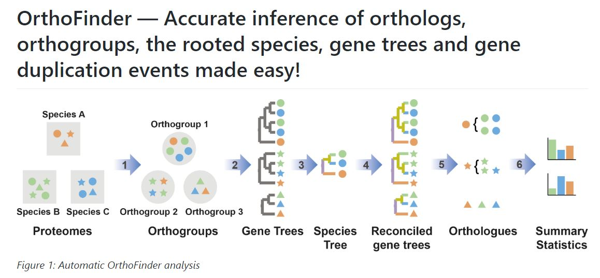

Practice: Genome visualization and comparative genomics¶
Orthology and Gene Family Analysis¶
Synteny is a good way to identify orthologous genes between species, but sometimes genes move around the genome, and when they are in new places, syntenic approaches are unable to identify orthologous gene pairs. Very distantly related species like rice and moss also have undergone massive strucutral rearrangements and polyploidy, so many of the genes are no longer in the same places. Alternatively, we can cluster similar groups of genes into gene families or orthogroups. Here, we essentially use BLAST and set a threshold to group genes together based on similarity. Orthogroup analysis is a powerful way to identify corresponding genes across dozens of different species. This can be used to assign function or to identify gene losses or expansions related to important traits.
We will use OrthoFinder to compare the gene content of 56 divere flowering plant genomes.
https://github.com/davidemms/OrthoFinder

OrthoFinder can be used to cluster genes into orthogroups for any number of species and typcially, more species = more power. The input for OrthoFinder is a set of protein sequences in fasta format for each species. OrthoFinder is computationally intensive (All vs all alignment + phylogenetic tree construction), so we ran this already on a set of 56 species (see below). I have provided an example submission script on HPCC if you’d like to run it yourself!
Challenge problem: Run OrthoFinder on a group of your favorite species!¶
I have provided orthofinder results for a group of ~21 species, but you can run Orthofinder on a different set of species of your choosing. Orthofinder is relatively CPU intensive, but this depends on the number of species you include in the analysis and the total number of genes.
I put an example slurm submission script for Orthofinder under /mnt/ufs18/rs-007/REU_Plant_Genome_2021/Orthofinder as follows:
#!/bin/sh --login
#SBATCH --time=96:00:00 # limit of wall clock time - how long the job will run (same as -t)
#SBATCH --nodes=1 # number of different nodes - could be an exact number or a range of nodes (same as -N)
#SBATCH --ntasks=8 # number of tasks - how many tasks (nodes) that you require (same as -n)
#SBATCH --cpus-per-task=1 # number of CPUs (or cores) per task (same as -c)
#SBATCH --mem-per-cpu=4g # memory required per allocated CPU (or core) - amount of memory (in bytes)
#SBATCH -J Orthofinder
cd /mnt/ufs18/rs-007/REU_Plant_Genome_2021/Orthofinder/
module purge
module load iccifort/2019.5.281 impi/2018.5.288
module load OrthoFinder/2.4.1-Python-3.7.4
orthofinder -t 8 -a 8 -b /mnt/ufs18/rs-034/VanBuren_Lab/Bob/ -f /mnt/ufs18/rs-007/REU_Plant_Genome_2021/Orthofinder/Proteins_seqs/
Here, I have requested 1 node with 8 cpus to run orthofinder. I have only included protein datasets from 8 species (under /mnt/ufs18/rs-007/REU_Plant_Genome_2021/Orthofinder/Proteins_seqs/), so this should run in a reasonable amount of time with these resources. I would typically request 96 processors, but this should be fine. I have requested a wall time of 96 hours and 4 Gb of memory per node. We need to load a few modules including the Intel compilers toolchain and Intel MPI Library, which are useful to create, maintain, and test advanced programs on high performance computing clusters. We will also load Orthofinder version 2.41 and specify the correct version of Python to run. We could also install OrthoFinder locally ourselves using a conda virtual environment, but we won’t get into that here. If you decide to run Orthofinder yourself, make sure to change the starting directory and the -b flag in the command, as this controls where the files will be output. DO NOT OUTPUT THEM IN THE COURSE DIRECTORY
If you want to run orthofinder of different/additional species, you simply need to download the protein file and include it in the directory containing protein sequences.
## Answer
## What species did you choose and what do the output files look like?
We will use the output files you generated or the ones I provided for the remainder of this exercise.
Phylogenetics with Bio.Phylo¶
Orthofinder builds a consensus phylogenetic tree based on all of the individual gene trees it constructs for each orthogroup. We can visualize this tree using the Biopython function Phylo. This will give us a sense of the phylogenetic placement of the species we included. First, we need to import a few functions in Biopython as well as matplotlib:
import copy
from io import StringIO
from Bio import Phylo
from Bio.Phylo.Applications import PhymlCommandline
from Bio.Phylo.PAML import codeml
from Bio.Phylo.PhyloXML import Phylogeny
%matplotlib inline
There are more powerful things that can be done with Phylo , but for now, we will simply read the tree file output from OrthoFinder and plot it.
Note: Remember to provide the path for the species tree file!
tree = Phylo.read("Practice9_SpeciesTree_rooted_node_labels.txt", "newick") ## specify the location of the tree file and the format (in this case, newick)
Printing the tree object as a string gives us a look at the entire object hierarchy.
print(tree)
Tree(rooted=False, weight=1.0)
Clade(name='N0')
Clade(branch_length=0.155854, name='A_trichopoda')
Clade(branch_length=0.155854, name='N1')
Clade(branch_length=0.0606656, name='N2')
Clade(branch_length=0.228865, name='M_acuminata')
Clade(branch_length=0.16245, name='N4')
Clade(branch_length=0.0263692, name='N7')
Clade(branch_length=0.152926, name='O_sativa')
Clade(branch_length=0.0448504, name='N11')
Clade(branch_length=0.0899464, name='B_distachyon')
Clade(branch_length=0.0623047, name='N18')
Clade(branch_length=0.021327, name='T_aestivum')
Clade(branch_length=0.0322549, name='H_vulgare')
Clade(branch_length=0.0475285, name='N8')
Clade(branch_length=0.0375789, name='N12')
Clade(branch_length=0.0473297, name='S_bicolor')
Clade(branch_length=0.0853178, name='Z_mays')
Clade(branch_length=0.0267575, name='N13')
Clade(branch_length=0.125734, name='P_glaucum')
Clade(branch_length=0.0458442, name='P_virgatum')
Clade(branch_length=0.0434707, name='N3')
Clade(branch_length=0.144636, name='N5')
Clade(branch_length=0.142634, name='C_quinoa')
Clade(branch_length=0.189526, name='A_hypochondriacus')
Clade(branch_length=0.0177019, name='N6')
Clade(branch_length=0.0226836, name='N9')
Clade(branch_length=0.018779, name='N14')
Clade(branch_length=0.223986, name='H_annuus')
Clade(branch_length=0.236829, name='D_carota')
Clade(branch_length=0.0288145, name='N15')
Clade(branch_length=0.213288, name='O_europaea')
Clade(branch_length=0.0332987, name='N19')
Clade(branch_length=0.1732, name='I_trifida')
Clade(branch_length=0.0819983, name='N22')
Clade(branch_length=0.030284, name='N27')
Clade(branch_length=0.0595303, name='N32')
Clade(branch_length=0.0215345, name='C_baccatum')
Clade(branch_length=0.0155229, name='N38')
Clade(branch_length=0.0175606, name='C_chinense')
Clade(branch_length=0.0141036, name='C_annuum')
Clade(branch_length=0.0215106, name='N33')
Clade(branch_length=0.0271149, name='N39')
Clade(branch_length=0.0345668, name='L_lycopersicum')
Clade(branch_length=0.028645, name='S_tuberosum')
Clade(branch_length=0.057139, name='N40')
Clade(branch_length=0.0449735, name='S_aethiopicum')
Clade(branch_length=0.0930196, name='S_melongena')
Clade(branch_length=0.0237471, name='N28')
Clade(branch_length=0.0942438, name='P_axillaris')
Clade(branch_length=0.0726756, name='N_tabacum')
Clade(branch_length=0.0108156, name='N10')
Clade(branch_length=0.0181781, name='N16')
Clade(branch_length=0.255678, name='K_fedtschenkoi')
Clade(branch_length=0.185973, name='N20')
Clade(branch_length=0.0428217, name='N23')
Clade(branch_length=0.0540807, name='A_thaliana')
Clade(branch_length=0.0438825, name='C_sativa')
Clade(branch_length=0.0655039, name='N24')
Clade(branch_length=0.0264044, name='B_juncea')
Clade(branch_length=0.0195624, name='N29')
Clade(branch_length=0.0122517, name='B_oleracea')
Clade(branch_length=7.08878e-06, name='B_napus')
Clade(branch_length=0.0173579, name='N17')
Clade(branch_length=0.183085, name='V_vinifera')
Clade(branch_length=0.0174968, name='N21')
Clade(branch_length=0.0181073, name='N25')
Clade(branch_length=0.161275, name='G_hirsutum')
Clade(branch_length=0.153381, name='M_esculenta')
Clade(branch_length=0.0120813, name='N26')
Clade(branch_length=0.0929668, name='N30')
Clade(branch_length=0.0530936, name='N34')
Clade(branch_length=0.0534037, name='G_max')
Clade(branch_length=0.0416739, name='N41')
Clade(branch_length=0.112257, name='V_radiata')
Clade(branch_length=0.0343089, name='P_vulgaris')
Clade(branch_length=0.0544206, name='N35')
Clade(branch_length=0.0883218, name='C_arietinum')
Clade(branch_length=0.0267305, name='N42')
Clade(branch_length=0.0655017, name='M_truncatula')
Clade(branch_length=0.0817244, name='P_sativum')
Clade(branch_length=0.0144576, name='N31')
Clade(branch_length=0.145725, name='N36')
Clade(branch_length=0.0259418, name='N43')
Clade(branch_length=0.0648684, name='C_melo')
Clade(branch_length=0.0127271, name='N47')
Clade(branch_length=0.0306412, name='B_hispida')
Clade(branch_length=0.0137207, name='N52')
Clade(branch_length=0.0830025, name='L_siceraria')
Clade(branch_length=0.0244921, name='C_lanatus')
Clade(branch_length=0.0544347, name='N44')
Clade(branch_length=0.0217733, name='C_maxima')
Clade(branch_length=0.015159, name='N48')
Clade(branch_length=0.0346505, name='C_pepo')
Clade(branch_length=0.020101, name='C_moschata')
Clade(branch_length=0.0667513, name='N37')
Clade(branch_length=0.0649491, name='N45')
Clade(branch_length=0.0266938, name='N49')
Clade(branch_length=0.038294, name='R_chinensis')
Clade(branch_length=0.0583631, name='F_annanassas')
Clade(branch_length=0.0964584, name='R_ideus')
Clade(branch_length=0.035775, name='N46')
Clade(branch_length=0.0557704, name='N50')
Clade(branch_length=0.0174307, name='P_armeniaca')
Clade(branch_length=0.0115406, name='N53')
Clade(branch_length=0.0138808, name='P_persica')
Clade(branch_length=0.00803339, name='P_dulcis')
Clade(branch_length=0.0722022, name='N51')
Clade(branch_length=0.0532603, name='P_communis')
Clade(branch_length=0.0247789, name='N54')
Clade(branch_length=0.0200424, name='M_domestica')
Clade(branch_length=0.0237431, name='M_baccata')
The Tree object contains global information about the tree, such as whether it’s rooted or unrooted. It has one root clade, and under that, it’s nested lists of clades all the way down to the tips.
It’s hard to draw meaning from this, but we can draw the tree in a more informative way. The function draw_ascii creates a simple ASCII-art (plain text) dendrogram. This is a convenient visualization for interactive exploration, in case better graphical tools aren’t available.
Phylo.draw_ascii(tree)
_____________ A_trichopoda
|
| _____________________ M_acuminata
| |
| | ______________ O_sativa
| | _|
| _____| | | _______ B_distachyon
| | | | |____|
| | | | | __ T_aestivum
_| | | | |____|
| | |_______________| |___ H_vulgare
| | |
| | | ___ S_bicolor
| | | ___|
| | | | |_______ Z_mays
| | |___|
| | | ___________ P_glaucum
| | |__|
| | |___ P_virgatum
|_____________|
| _____________ C_quinoa
| ____________|
| | |__________________ A_hypochondriacus
| |
| | _____________________ H_annuus
| | _|
| | | |______________________ D_carota
| | |
| | _| ____________________ O_europaea
| || | |
| || | | ________________ I_trifida
| || | | |
|____|| |__| | _ C_baccatum
|| | | _____|
|| | | | | _ C_chinense
|| | | | ||
|| |__| | |_ C_annuum
|| | __|
|| | | | __ L_lycopersicum
|| | | | __|
|| | | | | |_ S_tuberosum
|| | | |_|
|| |_______| | ___ S_aethiopicum
|| | |_____|
| | |________ S_melongena
| |
| | ________ P_axillaris
| |_|
| |______ N_tabacum
|
| _______________________ K_fedtschenkoi
| |
| _| ____ A_thaliana
|| | ___|
|| | | |___ C_sativa
|| |_________________|
|| | __ B_juncea
|| |_____|
|| | , B_oleracea
|| |_|
| | B_napus
|
| ________________ V_vinifera
| |
| | _______________ G_hirsutum
| | ,|
| | ||______________ M_esculenta
|_| |
| | ____ G_max
| | ____|
| | | | _________ V_radiata
| | | |___|
| | ________| |__ P_vulgaris
|_|| |
|| | _______ C_arietinum
|| |____|
|| | ______ M_truncatula
|| |_|
|| |_______ P_sativum
||
|| _____ C_melo
|| __|
|| | | __ B_hispida
| | ||
| | | _______ L_siceraria
| _____________| ||
|| | |_ C_lanatus
|| |
|| | _ C_maxima
|| |____|
|| | __ C_pepo
|| |_|
|| |_ C_moschata
|
| ___ R_chinensis
| _|
| _____| |_____ F_annanassas
| | |
| | |________ R_ideus
| |
|______| _ P_armeniaca
| ____|
| | | _ P_persica
| | ||
|__| | P_dulcis
|
| ____ P_communis
|______|
| _ M_domestica
|_|
|_ M_baccata
Here we can see we constructed OrthoGroups for 56 flowering plant species across ~20 plant families. See if you can figure out which species are which and read the tree correctly.
You can also create a slightly nicer graphic using the draw function:
Phylo.draw(tree, branch_labels=lambda c: c.branch_length)
Analyzing Orthofinder gene family results¶
Now that we have a good sense of the phylogenetic placement of our species, we can play around with the OrthoFinder results. The primary output of OrthoFinder is a csv file where each row is a different orthogroup and each column is a different species The numbers correspond to the number of genes in that orthogroup for each species. We can use this to get simple metrics on or more complex dynamics of expansion and contraction of genes in specific lineages. In terms of downstream analyses, you could identify an orthogroup that contains your favorite gene and find the orthologous sequences in all your other species of interest. You could identify expanded or contracted orthogroups in one species and use Gene Ontology terms or other classifiers to see what those duplicated genes are likely involved in.
You could also use these orthogroups as common identifiers across species and map expression to each orthogroup (as we did in last year’s class porject).
For simplicity, we will use pandas to read in, manipulate, and analyze our dataframe:
import matplotlib.pyplot as plt
%matplotlib inline
import numpy as np
import pandas as pd
data = pd.read_csv("Practice9_Orthogroups.GeneCount.csv")
data.head()
| Orthogroup | A_hypochondriacus | A_thaliana | A_trichopoda | B_distachyon | B_hispida | B_juncea | B_napus | B_oleracea | C_annuum | ... | R_ideus | S_aethiopicum | S_bicolor | S_melongena | S_tuberosum | T_aestivum | V_radiata | V_vinifera | Z_mays | Total | |
|---|---|---|---|---|---|---|---|---|---|---|---|---|---|---|---|---|---|---|---|---|---|
| 0 | OG0000000 | 0 | 0 | 0 | 0 | 0 | 0 | 0 | 0 | 0 | ... | 0 | 16 | 0 | 12967 | 0 | 0 | 0 | 0 | 0 | 12989 |
| 1 | OG0000001 | 0 | 2 | 13 | 0 | 12 | 19 | 1 | 0 | 66 | ... | 5 | 29 | 0 | 4560 | 62 | 0 | 6 | 1 | 6 | 6079 |
| 2 | OG0000002 | 38 | 6 | 4 | 3 | 7 | 26 | 22 | 10 | 129 | ... | 132 | 85 | 2 | 66 | 74 | 5 | 22 | 9 | 1 | 3690 |
| 3 | OG0000003 | 1 | 41 | 17 | 0 | 24 | 71 | 113 | 39 | 73 | ... | 42 | 16 | 0 | 75 | 60 | 0 | 19 | 44 | 0 | 3215 |
| 4 | OG0000004 | 8 | 33 | 1 | 25 | 18 | 62 | 106 | 47 | 60 | ... | 84 | 22 | 33 | 39 | 51 | 132 | 30 | 46 | 22 | 3102 |
5 rows × 58 columns
How many total orthogroups are there for this dataset?¶
## Answer
Which species has the most genes in orthogroups?¶
## Answer
Which orthogroup has the most genes in it (across all species)?¶
## Answer
Which species has the most orthogroups with 0 genes? Why do you think that is?¶
## Answer
Bonus challenge: Plot the distribution of orthogroup size¶
## Answer
BONUS challenge 2X: Identify orthogroups that are expanded in one species of your choice. This can be simply based on some cutoff, or preferably, using a statistical test.¶
## Answer